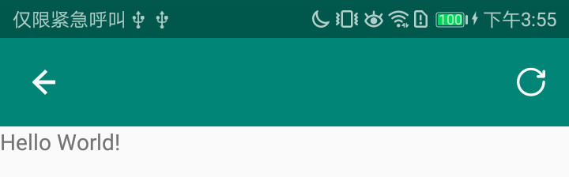
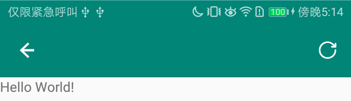
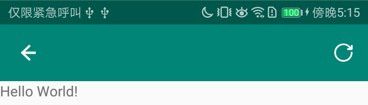

Directory
通用配置
style
<!-- Base application theme. -->
<style name="AppTheme" parent="Theme.AppCompat.Light.NoActionBar">
<!--标题栏颜色-->
<item name="colorPrimary">@color/colorPrimary</item>
<!--状态栏颜色-->
<item name="colorPrimaryDark">@color/colorPrimaryDark</item>
<!--EditText，RaidoButoon，seekBar等的颜色-->
<item name="colorAccent">@color/colorAccent</item>
</style>
AndroidManifest.xml
<application
android:theme="@style/AppTheme"
... >
...
</application>
menu （没有menu, 跳过即可）
<menu xmlns:android="http://schemas.android.com/apk/res/android"
xmlns:app="http://schemas.android.com/apk/res-auto">
<item
android:id="@+id/menu_item_refresh"
android:icon="@drawable/toolbar_menu_refresh"
android:orderInCategory="1"
android:title=""
app:showAsAction="ifRoom|withText" />
</menu>
第一种
Toolbar布局
<android.support.v7.widget.Toolbar xmlns:android="http://schemas.android.com/apk/res/android"
xmlns:app="http://schemas.android.com/apk/res-auto"
android:id="@+id/toolbar"
android:layout_width="match_parent"
android:layout_height="wrap_content"
android:background="?attr/colorPrimary"
android:minHeight="?attr/actionBarSize"
app:popupTheme="@style/ThemeOverlay.AppCompat.Light">
...
</android.support.v7.widget.Toolbar>
BaseActivity或BaseFragment代码
private void initToolbar() {
//透明状态栏，不需要请注释掉
if (Build.VERSION.SDK_INT >= 21) {
getWindow().setStatusBarColor(Color.TRANSPARENT); //状态栏跟随标题栏颜色
}
Toolbar toolbar = findViewById(R.id.toolbar);
if (toolbar == null) return;
toolbar.setNavigationIcon(R.drawable.toolbar_navigation_icon); //返回键图标
toolbar.setNavigationOnClickListener(new View.OnClickListener() {
@Override
public void onClick(View view) {
finish();
}
});
toolbar.inflateMenu(R.menu.menu_refresh); //右上角menu
toolbar.setOnMenuItemClickListener(new Toolbar.OnMenuItemClickListener() {
@Override
public boolean onMenuItemClick(MenuItem menuItem) {
switch (menuItem.getItemId()) {
case R.id.menu_item_refresh:
Toast.makeText(getApplicationContext(), "menu刷新", Toast.LENGTH_LONG).show();
}
return true;
}
});
}
说明
1. 纯布局文件控制，代码量少
2. 支持Activity和Fragment沉浸式状态栏

第二种
Toolbar布局
<android.support.v7.widget.Toolbar xmlns:android="http://schemas.android.com/apk/res/android"
xmlns:app="http://schemas.android.com/apk/res-auto"
android:id="@+id/toolbar"
android:layout_width="match_parent"
android:layout_height="wrap_content"
android:background="?attr/colorPrimary"
android:fitsSystemWindows="true"
android:minHeight="?attr/actionBarSize"
app:popupTheme="@style/ThemeOverlay.AppCompat.Light">
</android.support.v7.widget.Toolbar>
BaseActivity代码
protected void initToolbar() {
Toolbar toolbar = findViewById(R.id.toolbar);
if (toolbar != null) {
toolbar.setNavigationIcon(R.drawable.toolbar_navigation_icon);
setSupportActionBar(toolbar);
}
ActionBar actionBar = getSupportActionBar();
if (actionBar != null) {
actionBar.setDisplayShowTitleEnabled(false);//自定义标题居中需要关闭
actionBar.setDisplayHomeAsUpEnabled(true);//显示返回键
}
//状态栏跟随标题栏颜色，不需要请注释掉
if (Build.VERSION.SDK_INT >= 21) {
getWindow().setStatusBarColor(Color.TRANSPARENT);
}
//沉浸式状态栏
if (Build.VERSION.SDK_INT >= 16) {//SYSTEM_UI_FLAG_LAYOUT_STABLE required 16
getWindow().getDecorView().setSystemUiVisibility(View.SYSTEM_UI_FLAG_LAYOUT_STABLE | View.SYSTEM_UI_FLAG_LAYOUT_FULLSCREEN);
}
}
@Override
public boolean onCreateOptionsMenu(Menu menu) {
getMenuInflater().inflate(R.menu.menu_refresh, menu);
return super.onCreateOptionsMenu(menu);
}
@Override
public boolean onOptionsItemSelected(MenuItem item) {
switch (item.getItemId()) {
case android.R.id.home: //返回键
finish();
break;
case R.id.menu_item_refresh: //右上角的menu
Toast.makeText(getApplicationContext(), "menu刷新", Toast.LENGTH_LONG).show();
break;
default:
return super.onOptionsItemSelected(item);
}
return true;
}
说明
1. 支持状态栏跟随标题栏颜色
2. Toolbar布局需要增加一个属性：android:fitsSystemWindows="true"，否则Toolbar会上移一个状态栏高度
3. 仅支持Activity，如果单一Activity+多Fragment模式下，后续添加的Fragment会上移一个状态栏高度
fitSystemWindows属性：
官方描述:Boolean internal attribute to adjust view layout based on system windows such as the status bar.
If true, adjusts the padding of this view to leave space for the system windows.
Will only take effect if this view is in a non-embedded activity.
简单描述：这个一个boolean值的内部属性，让view可以根据系统窗口(如status bar)来调整自己的布局，
如果值为true,就会调整view的paingding属性来给system windows留出空间....

